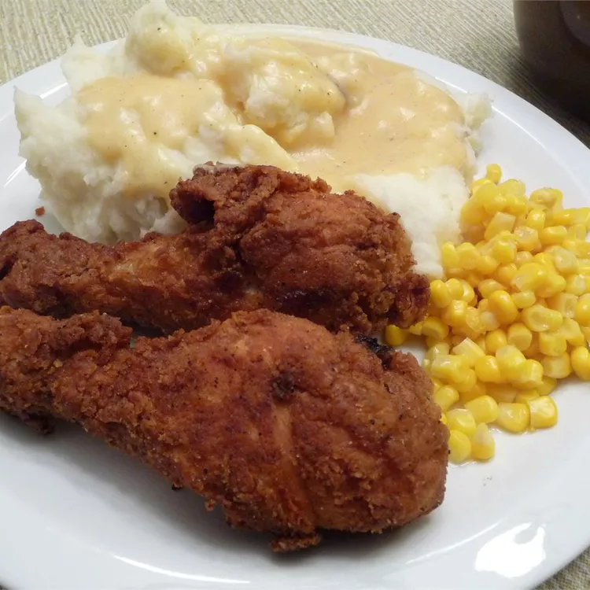

Home
Fried Chicken with Creamy Gravy

Description
Seasoned fried chicken is served with a rich gravy made from the pan drippings. It's down home goodness that's definitely not for dieters!
- Prep Time: 25 mins
- Cook Time: 30 mins
- Total Time: 55 mins
- Servings: 8
Ingredients
- ½ cup milk
- 1 egg, beaten
- 1 cup all-purpose flour
- 2 teaspoons garlic salt
- 1 teaspoon paprika
- 1 teaspoon ground black pepper
- ¼ teaspoon poultry seasoning
- 1 (4 pound) whole chicken, cut into pieces
- 3 cups vegetable oil
- 1 cup chicken broth
- 1 cup milk
Directions
- In a medium bowl, beat together 1/2 cup milk and egg. In a resealable plastic bag, mix together the flour, garlic salt, paprika, pepper and poultry seasoning. Place chicken in bag, seal, and shake to coat. Dip chicken in milk and egg mixture, then once more in flour mixture. Reserve any remaining flour mixture.
- In a large skillet, heat oil to 365 degrees F (185 degrees C). Place coated chicken in the hot oil, and brown on all sides. Reduce heat to medium-low, and continue cooking chicken until tender, about 30 minutes. Remove chicken from skillet, and drain on paper towels.
- Discard all but 2 tablespoons of the frying oil. Over low heat, stir in 2 tablespoons of the reserved flour mixture. Stirring constantly, cook about 2 minutes. Whisk in chicken stock, scraping browned bits off bottom of skillet. Stir in 1 cup milk, and bring all to a boil over high heat, stirring constantly. Reduce heat to low, and simmer for about 5 minutes. Serve immediately with the chicken.